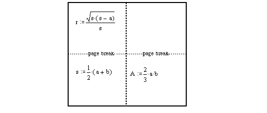
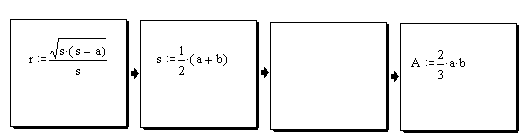

Printing from Mathcad |
| To print a worksheet: |
Choose Print from the File menu to bring up the Print dialog box.
To preview your document, choose Print Preview from the File Menu.
| Printing Wide Worksheets |
Worksheets can be wider than a sheet of paper. Vertical gray lines on the screen indicate the right margin. Regions beyond the right margin will print on separate pages. You may see blank pages when you print if there are regions beyond the right margin on only some pages.
Here's an example of a worksheet that will print with a blank page.


To suppress printing of all regions beyond the right margin:
Choose Page Setup from the File menu.
Check "Print single page width."
| To print selected pages |
Look at the indicator on the lower left of the Mathcad window to identify which pages you want to print.
In the Print dialog box, choose "Selected pages."
Type the page range you want in the text boxes "from" and "to." To print only one page, type the same page number in both boxes.
| To print selected regions |
Press [Ctrl] then click on the regions you want to select.
You can unselect a region by pressing [Ctrl] and clicking on it again.
Choose Print from the File menu to bring up the Print dialog box.
Choose "Selection."